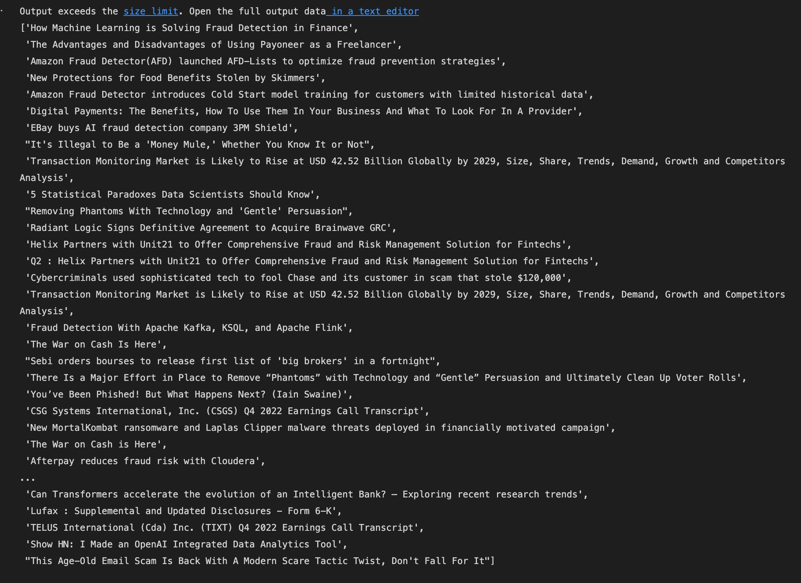
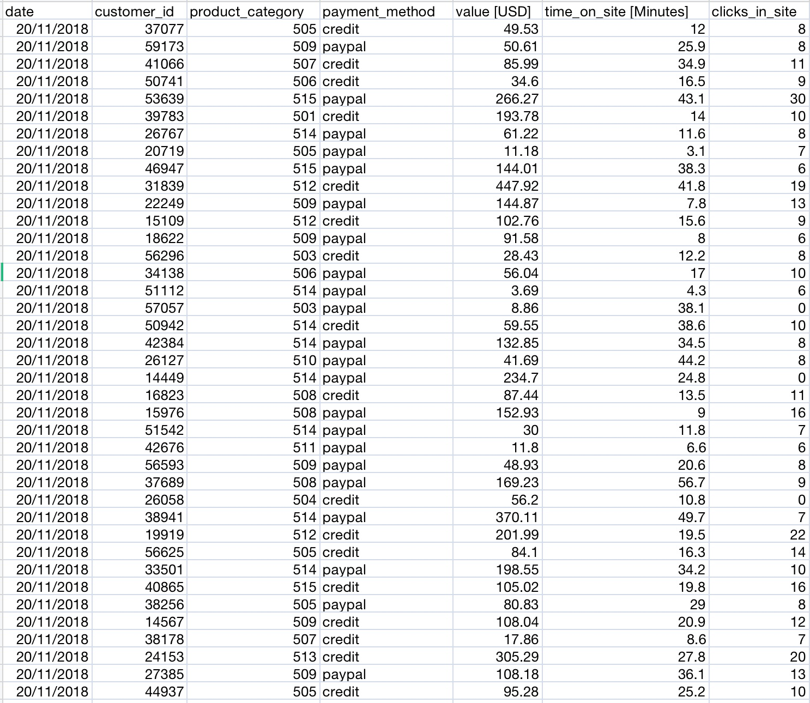
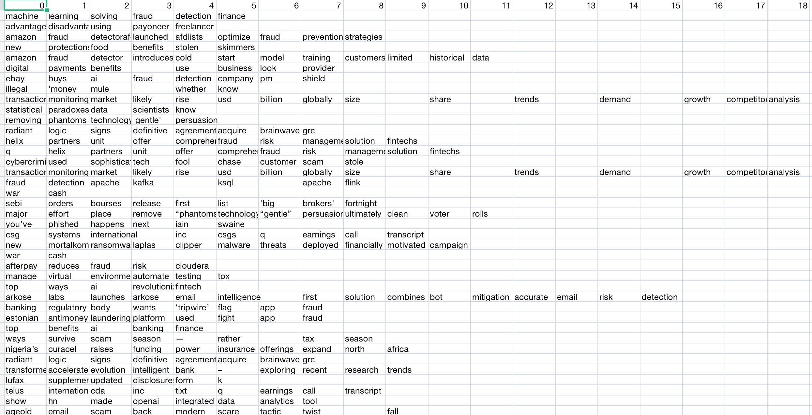
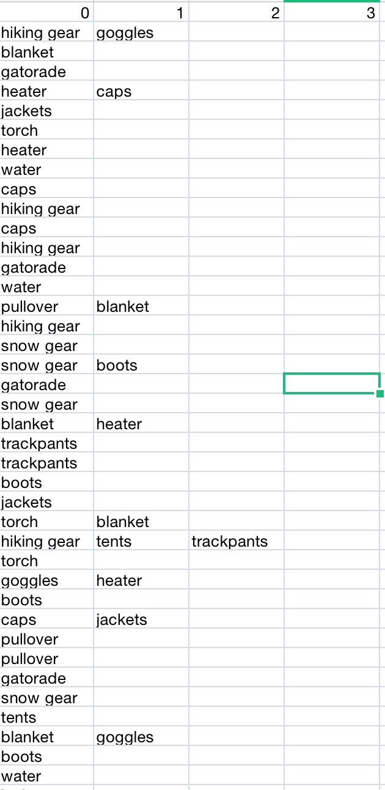
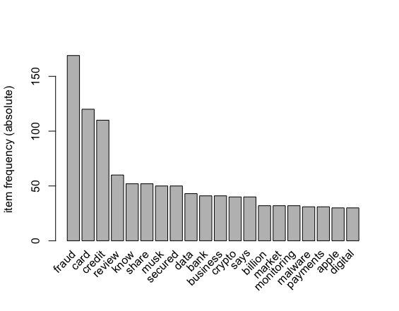
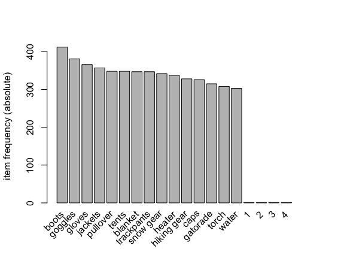

Association Rule Mining(ARM)
Overview
Association Rule Mining is a data mining technique used to discover the relationships between variables in
large datasets. Specifically, it involves identifying patterns or associations among items in a dataset,
and extracting rules that describe how these items are related to each other.
The process of association rule mining typically involves three steps:
- Data preprocessing: In the data preprocessing step, the dataset is cleaned, filtered, and transformed into a format suitable for analysis
- Rule generation: In the rule generation step, frequent itemsets are identified, and association rules are generated based on these itemsets
- Rule evaluation: In the rule evaluation step, the generated rules are evaluated based on metrics such as support, confidence, and lift to determine their usefulness and relevance.
Rules in ARM
A rule is an implication of the form "if A then B", where A and B are itemsets. A rule represents a relationship between the presence of items in a dataset, and can be used to make predictions about which items are likely to co-occur. The strength and usefulness of a rule can be evaluated using metrics such as support, confidence, and lift
- Support: The support of an itemset is the frequency with which it appears in the dataset. It measures the proportion of transactions in the dataset that contain the itemset.The higher the support, the more frequently the itemset occurs in the dataset
- Confidence: The confidence of a rule is the conditional probability of the consequent given the antecedent. It measures how often the rule is true, given that the antecedent is true. A high confidence value indicates that the rule is reliable and accurate
- Lift: The lift of a rule measures the strength of the association between the antecedent and the consequent, relative to what would be expected if they were independent. A lift value greater than 1 indicates a positive association between the antecedent and the consequent, while a lift value less than 1 indicates a negative association.
Apriori
Apriori algorithm is used to find frequent itemsets and generate association rules from a dataset. The algorithm is based on the observation that any subset of a frequent itemset must also be frequent. The Apriori algorithm works in two main steps:
-
Generating frequent itemsets:
- The algorithm starts by finding all the frequent itemsets in the dataset (i.e., items that appear above a minimum support threshold).
- TThe support of each candidate itemset is calculated, and only those above the minimum support threshold are retained as frequent itemsets
-
Generating association rules:
- Once the frequent itemsets are identified, the algorithm generates association rules with high confidence from these itemsets
- The confidence of each rule is calculated, and only those with confidence above a minimum threshold are retained as high-confidence rules
How is ARM used in this project?
ARM is implemented on the textual data collected from Newsapi.org corpus containing headlines of the news articles related to the keyword "fraudulent transaction detection" and " fraud transaction" such that there is enough data to perform ARM. Apart from that, ARM is also performed on a purchase itemset data Click Here such that to get insight on itemsets which are frequently bought and any pertaining patterns/information it contains. The textual data will explain which keywords are closely associated with our keywords 'fraud transactions' and 'fraudulent transaction detection'.
Data Preparation
Here is the snippet for both the dataset used in performing ARM.
Dataset Before
 Dataset After Transforming
Here the textual data is easy to interpret, for the purchase itemset transaction data column - product_category is modified to have some textual values rather than numeric to perform ARM. For example Item number 501 changed to jackets.
Dataset is transformed in such a way where each transaction represents a set of items that are purchased, used, or observed together, and ARM aims to find patterns or relationships between these items. By analyzing this transactional data using ARM, itemsets that occur frequently together can be observed and association rules can be generated that describe the relationships between these itemsets. Click Here for the code.  
Results
Frequency plot for textual data:
Here from the graph, it is obvious that credit card, banks, payments, business, crypto are highly associated words
when it comes to fraudulent transactions.

Frequency plot for purchase transaction data:
Here from the graph, the most frequent itemset which is purchased is boots followed by goggles and gloves.

Support=.03, Confidence=.5, minlen=2 generates the following visualization for the textual data:
Top 15 Rules by Confidence
Rule 12: {card,credit,secured}=> {review} support = 0.0384 confidence = 1 coverage = 0.0384 lift = 17.4 count = 40 order = 4 id = 12. This rule explains that credit card secured will lead to review and has a high lift which explains they are highly associated.
Top 15 Rules by Lift
Top 15 Rules by Support
Support=.0005, Confidence=.03, minlen=2 generates the following visualization for the purchase transaction data:
Top 15 Rules by Confidence
Rule 13: {hiking gear} => {tents} support = 0.000607 confidence = 0.0366 coverage = 0.0166 lift = 2.08 count = 12 order = 2 id = 13 This rule explains that if hiking gear is bought then how is tents associated with it, will it be bought? from the information they have less confidence but lift>1 which suggest they are positively associated.
Top 15 Rules by Lift
Top 15 Rules by Support
Conclusion
From the dataset collected to perfortm association rule mining, from the results we can say that the textual data associated with fraudulent transaction are bank, credit card, crypto, business, digital, etc which does makes sense.From the purchase itemset data, we can infer which itemsets appear frequently and which all items are highly associated with each other and have the high probability of getting bought with some item. For example if customer buys hiking gear, they are likely to buy tents.